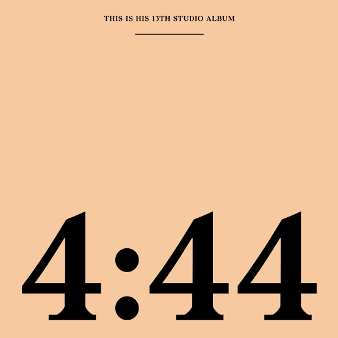
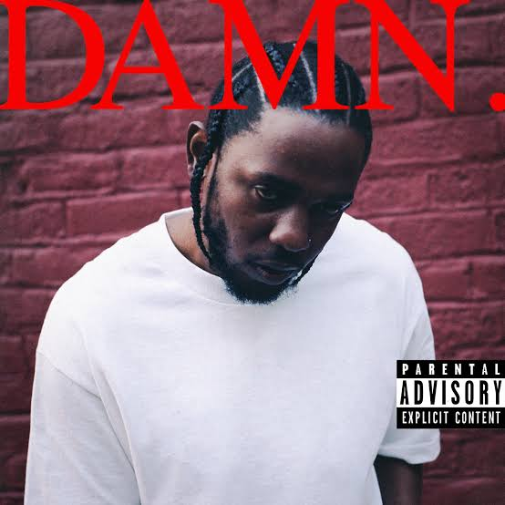

This list is about the top meaningful hip hop projects of the 2010s. I must admit, it was not easy
making up this list, I had so many entries and from those entries, only a handful of projects had
to make the top 10. To write about about the most commercially successful albums of the 2010s,
now that would be easy, as so many sources of information are available on that but the most meaningful albums
that's hard, somebody must get me a towel, I am sweating over here. without wasting time, lets see what are my most
personally meaningful albums.
Kota The Friend: Foto (2019)
Imagen your life shown on a photo album!, now that is what Kota the friend has created with the album,
the album is filled with wisdom and inspiration. the albums dives in on topics such as racism, unconditional love ...
and. the album gets a thumbs up from me, it reminds the listener to take a photo now and then, because,
what matters now, is truly what shapes, what is next to come
FOTO, Chicago Dinner, For Colored Boys, and Birdie.more
Chance the Rapper: The Coloring Book (2016)
"Am I the only ni**a that still care about mixtapes", well I'm certainly not, this is
the only mixtape that made the list and it's worthy of a listen,
the project is filled with positive emotions and vibes.the mixtape is gospel themed,
talking about the love for God, the album reminds me of how much peaceful and fun
it was being a child. Who is the happiest person on earth? its probably a child,
who has parents that care and love the child unconditionally.
Same Drug, Angels, No Problem, and How Great.
Jay-Z: 4:44 (2017)

Jay-Z's 13th studio album, an albums filled with meaning, it talks about
separation of the Hip-Hop culture between the old and new rappers, talks about
racism, pain, Wealth..and Cheating. the album showcases a more far conscious and matured Jay-Z.
The Story of O.J, Smile, Family Feud, and Marcy Me more
J Cole: 4 Your Eyes Only (2016)
The album is said to be dedicated to a childhood friend, who got caught up in the streets and
was killed at the age of 22.the album is from the friend's perspective and a message he wants to
leave for his daughter to understand the world. the album talks Change, Love ..And Journey of becoming a man.
Vile Mentality, Change, Immortal, and 4 Your Eyez Only.
Saba: Care 4 Me (2018)
This Saba's second studio album, an artist most have never heard, since the most meaningful projects don't
get charts recognition, Care 4 contains Sabas most diaristic storytelling,
mostly about his life and the life and death of his cousin Walter Long J. The album
talks about mental health, self-care...and grief.
Ohh My, another Kendrick Lamar project of the list: the is no arguing that Kendrick is a talented
artist that makes music with impactful meaning, that's why you will probably find most of his albums on most Hip-Hop lists.
the album is a masterpiece like many of the albums that made the list, it talks about the influence your peers can have on your character, internal struggles ...and what truly makes an individual feel like he lived a purposeful life.
Another one: This album might be one of Kendrick's most famous albums, after it scoped so many well-deserved grammies.
To Pimp a Butterfly unlike most of his albums,where you have to dig deep to find its meaning, this
one comes off as straight forward. It talks about African-American culture, racial inequality, and i
nstitutional discrimination.my all-time favorite was "How much a Dollar Cost".
Hood Politics, The Blacker The Berry, How much a Dollar Cost, and You Ain't Gotta Lie.
J.Cole: 2014 Forest Hills (2014)
The album that talks about love, freedom, happiness and a lot of other themes, the album was named after the address
of his childhood home he bought back from a foreclosure, j cole starts of the album with "do you want to be
happy ?" and talks about how we all want to be happy and be filled with a sense of purpose in life and ends with the track
"Note to self" that talks about loving one another and giving credits to the people that helped him craft an amazing
album filled with positive emotions.
Apparently, Hello, No Role Modelz, and Love Yourz.more
Kendrick Lamar: DAMN. (2017)

This is the only Hip Hop album that has won the Pulitzer award, the most prestigious award,
awarded once every year since 1943. The album talks about loyalty, fear, love, lust, faith amongst other themes,
well my personal favorites is FEEL. where he talks about negative emotions
"The feelin' of an apocalypse happening,but nothing is awkward, the feelin won't prosper, The feeling is toxic.. " . This is worth listening to and rumor has it the album tells a
different meaning from track 1-14 and 14-1, definitely recommend it.